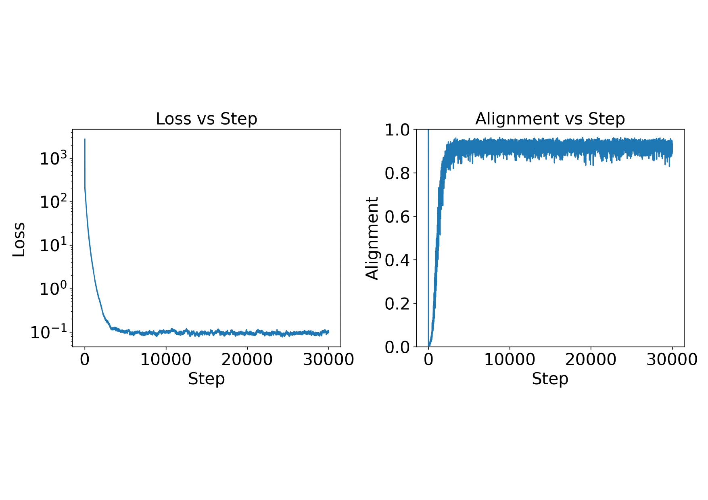
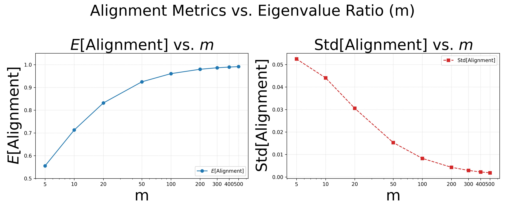

ALT 2026
TL;DR: On ill-conditioned landscapes, SGD's gradient aligns with the dominant Hessian subspace — yet updates along it fail to reduce the loss. We give a fine-grained, high-dimensional quadratic analysis showing how the step size governs this "suspicious alignment", and pin down a step-size interval where dominant-projected SGD raises the loss while bulk-projected SGD lowers it.
We study the suspicious alignment phenomenon in stochastic gradient descent (SGD) under ill-conditioned optimization, where the Hessian spectrum splits into dominant and bulk subspaces. During SGD, the alignment between the gradient and the dominant subspace first decreases, then rises, and finally stabilizes at a high value. It is "suspicious" because, paradoxically, projecting the update along this highly-aligned dominant subspace is ineffective at reducing the loss.
We give a fine-grained analysis, in a high-dimensional quadratic setup, of how step-size selection produces this phenomenon. We propose a step-size condition: in low-alignment regimes an adaptive critical step size $\eta_t^*$ separates alignment-decreasing from alignment-increasing behavior, while in high-alignment regimes the alignment is self-correcting. We further show that under sufficient ill-conditioning there is a step-size interval where projecting SGD to the bulk space decreases the loss while projecting to the dominant space increases it — explaining the recent empirical observation that dominant-subspace updates are ineffective. Finally, for constant step size and large initialization, we prove SGD exhibits a distinct two-phase behavior: an initial alignment-decreasing phase, then stabilization at high alignment.
Deep-network losses are ill-conditioned: the Hessian spectrum splits into a few high-curvature dominant directions $\mathcal{D}$ and a vast, near-flat bulk $\mathcal{B}$ — a "river-valley" landscape. As training proceeds, the gradient increasingly concentrates in $\mathcal{D}$ (the tiny-subspace effect), which we measure by the alignment
$$ \theta_t := \frac{\lVert \bm{P}^{\mathcal{D}}\nabla L(\bm{x}_t)\rVert_2^2}{\lVert \nabla L(\bm{x}_t)\rVert_2^2} \in [0,1]. $$
Intuitively, $\theta_t\approx 1$ looks like an opportunity — optimization is focused on the most curved directions. But recent work finds the opposite: at high alignment, SGD updates projected onto $\mathcal{D}$ fail to decrease the loss, while the tiny bulk component does. This is suspicious alignment, and it raises two questions:
Problem 1. How does the step size $\eta_t$ govern the evolution of the alignment
$\theta_t$ in ill-conditioned landscapes?
Problem 2. Why does dominant-projected SGD (DSGD) fail to reduce the loss while
bulk-projected SGD (BSGD) succeeds under high alignment?
We answer both completely in the high-dimensional quadratic case ($d\to\infty$).
We identify an adaptive critical step size $\eta_t^*(\bm{x}_t)$ that splits the dynamics into two regimes:
When $\theta_t \le g_{\mathrm{gap}}$, alignment depends on the step size: if $\eta_t<\eta_t^*$ then $\mathbb{E}[\theta_{t+1}\mid\bm{x}_t]<\theta_t$ (alignment drops); if $\eta_t>\eta_t^*$ it rises.
When $\theta_t \ge \theta_t^*$, alignment is self-correcting: $\mathbb{E}[\theta_{t+1}\mid\bm{x}_t]<\theta_t$ for any $\eta_t>0$ — it decreases no matter the step size.
These regimes are separated by a stable interval $(g_{\mathrm{gap}},\,\theta_t^*)$ into which $\theta_t$ tends to oscillate. As the ill-conditioning grows, both thresholds approach $1$: $g_{\mathrm{gap}},\theta_t^* \to 1$ as $\lambda_k/\lambda_{k+1}\to\infty$.
For a projected update onto subspace $\mathcal{S}\in\{\mathcal{D},\mathcal{B}\}$, the expected loss decreases iff $\eta_t<\eta^{\mathrm{loss}}_{\mathcal{S}}(\bm{x}_t)$, where
$$ \eta^{\mathrm{loss}}_{\mathcal{S}}(\bm{x}_t) = \frac{2\sum_{i\in\mathcal{S}}\lambda_i^2 c_{i,t}^2}{\sum_{i\in\mathcal{S}}\lambda_i^4 c_{i,t}^2 + \sum_{i\in\mathcal{S}}\lambda_i\kappa_i^2}. $$
There is a critical alignment $\theta^{\mathrm{crit}}_t\in(0,1)$ with $\theta_t<\theta^{\mathrm{crit}}_t \iff \eta^{\mathrm{loss}}_{\mathcal{D}}<\eta^{\mathrm{loss}}_{\mathcal{B}}$. As $\lambda_k/\lambda_{k+1}\to\infty$, $\theta^{\mathrm{crit}}_t\to 1$, so for nearly all $\theta_t<1$ an interval opens up:
When the step size lies in $\big(\eta^{\mathrm{loss}}_{\mathcal{D}},\,\eta^{\mathrm{loss}}_{\mathcal{B}}\big)$, DSGD increases the loss while BSGD decreases it — resolving the paradox of ineffective dominant-subspace updates.
Putting the step-size theory to work, for constant step size and large initialization we prove SGD follows a clean two-phase trajectory:
Transient phase. The alignment monotonically decreases in expectation — large early steps push the iterate off the dominant directions.
Equilibrium phase. The alignment then converges to a noise- and spectrum-dependent limit $\theta_\infty$, settling at high alignment — explaining the shape seen in the teaser and experiments.


@inproceedings{deng2026suspicious,
title = {Suspicious Alignment of SGD: A Fine-Grained Step Size Condition Analysis},
author = {Deng, Shenyang and Liao, Boyao and Ouyang, Zhuoli and
Pang, Tianyu and Song, Minhak and Yang, Yaoqing},
booktitle = {Proceedings of the International Conference on Algorithmic Learning Theory (ALT)},
year = {2026}
}